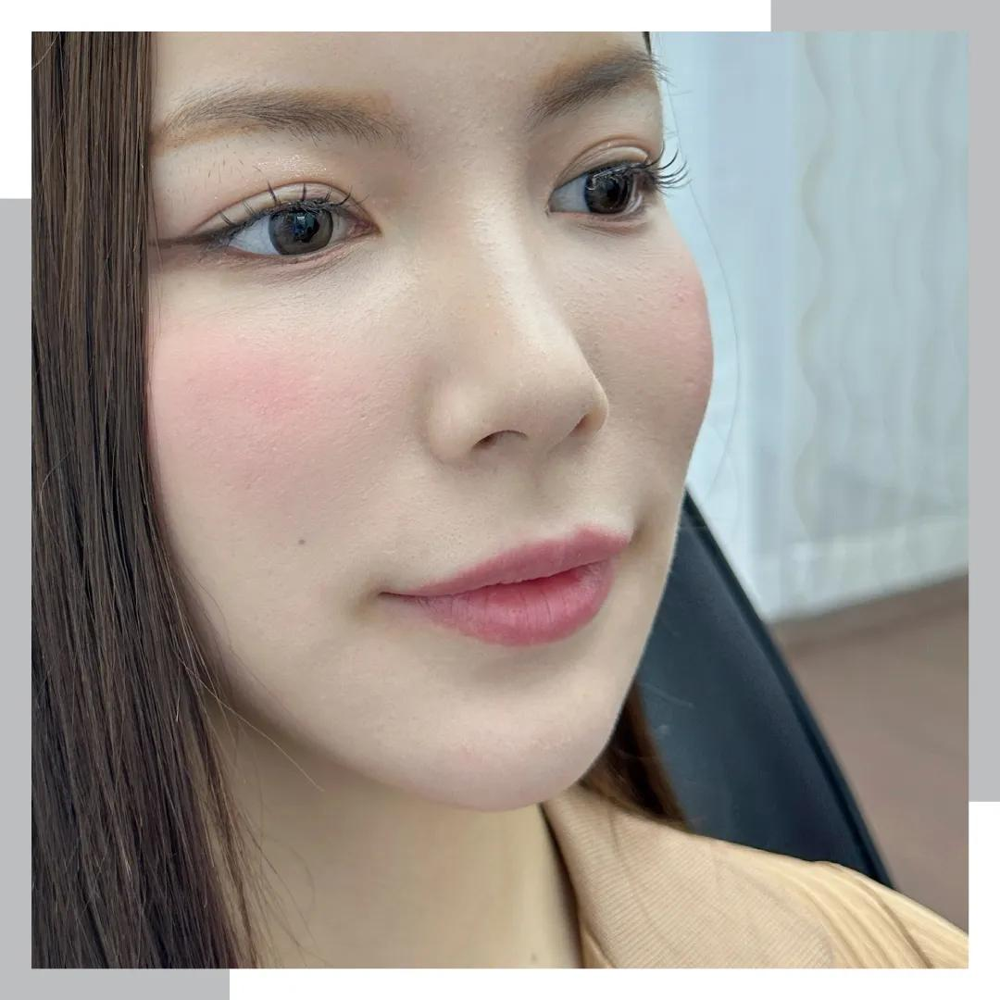
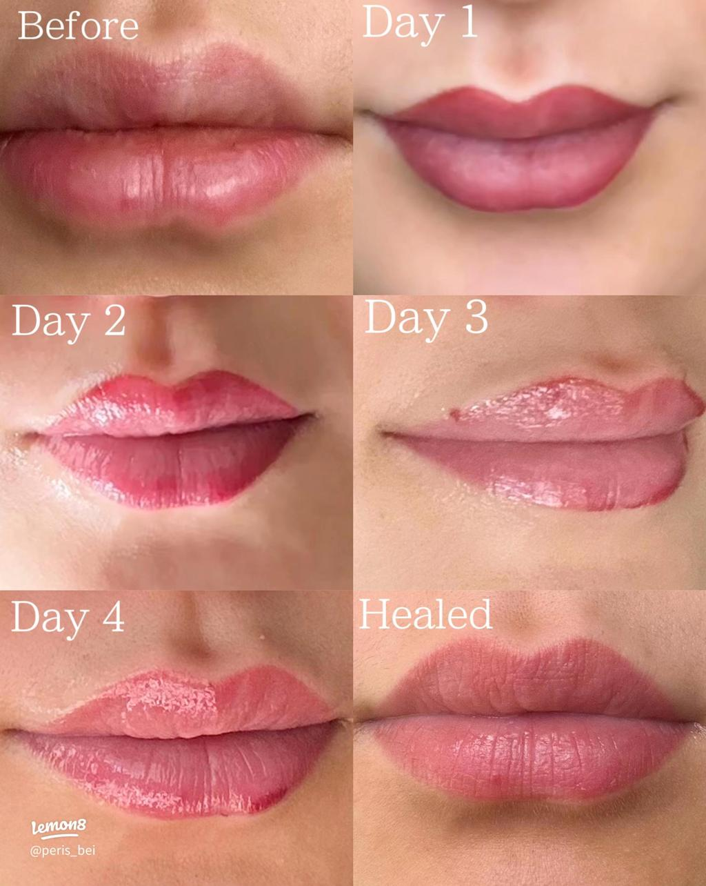
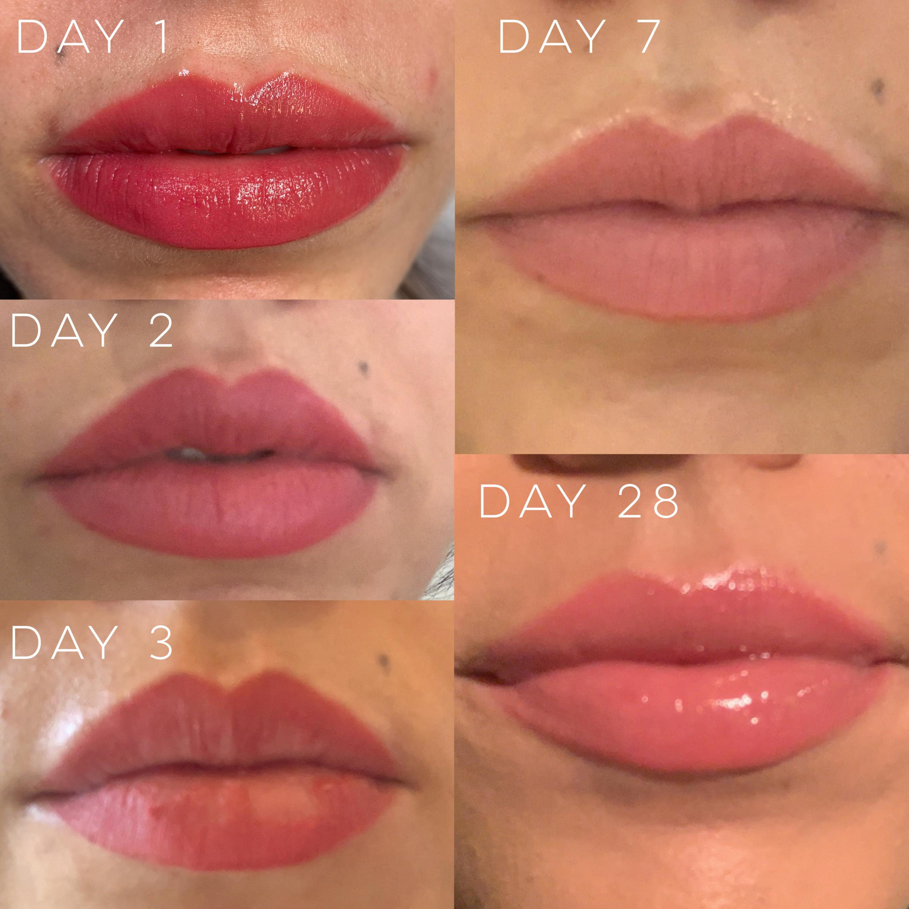
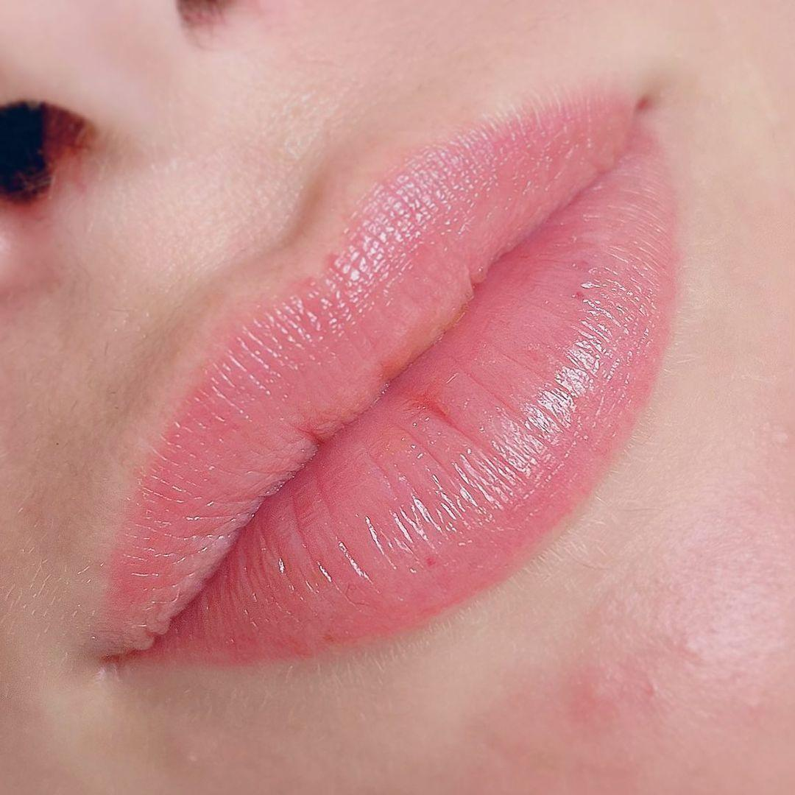
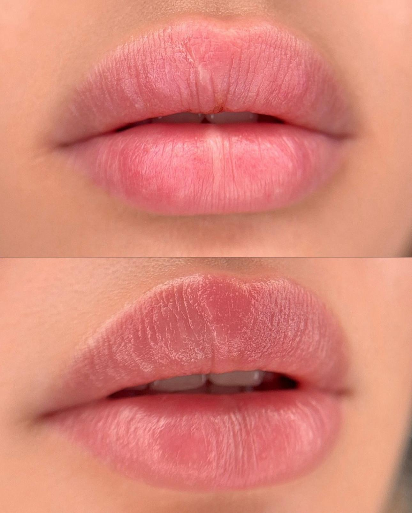

Phun Môi Bao Lâu Thì Được Hôn? Những Điều Bạn Cần Biết Sau Khi Thực Hiện
Sau khi phun môi, rất nhiều khách hàng thắc mắc phun môi bao lâu thì được hôn để không ảnh hưởng đến quá trình hồi phục. Đây là câu hỏi phổ biến, đặc biệt với những người lần đầu thực hiện dịch vụ.
Trong giai đoạn đầu sau phun, môi đang trải qua quá trình hồi phục tự nhiên. Vì vậy, việc hạn chế các tác động trực tiếp lên môi là điều nhiều kỹ thuật viên thường khuyến nghị để giúp môi có điều kiện hồi phục thuận lợi.
Vậy sau phun môi kiêng hôn bao lâu và khi nào có thể sinh hoạt bình thường? Hãy cùng ELLY PMU tìm hiểu trong bài viết dưới đây.
Vì Sao Sau Phun Môi Nên Hạn Chế Hôn?
Sau khi thực hiện, vùng môi còn nhạy cảm và cần thời gian để ổn định. Việc môi bị cọ xát hoặc chịu tác động mạnh trong giai đoạn đầu có thể khiến bạn cảm thấy khó chịu và ảnh hưởng đến quá trình hồi phục.
Do đó, nhiều cơ sở thẩm mỹ thường khuyên khách hàng hạn chế các tác động trực tiếp lên môi cho đến khi môi hồi phục ổn định.
Phun Môi Bao Lâu Thì Được Hôn?
Không có một mốc thời gian áp dụng cho tất cả mọi người. Khả năng hồi phục còn phụ thuộc vào cơ địa, tình trạng môi trước khi phun, cách chăm sóc sau khi thực hiện và mức độ hồi phục thực tế.
Thay vì chỉ dựa vào số ngày, bạn nên thực hiện theo hướng dẫn của kỹ thuật viên và chỉ sinh hoạt bình thường khi môi đã hồi phục ổn định.
Nếu còn băn khoăn, hãy liên hệ cơ sở đã thực hiện để được kiểm tra trước khi quay lại các hoạt động có tiếp xúc trực tiếp với môi.

Dấu Hiệu Cho Thấy Môi Đang Hồi Phục Tốt
Quá trình hồi phục ở mỗi người sẽ khác nhau. Thông thường, bạn nên theo dõi một số dấu hiệu như môi giảm cảm giác căng, bề mặt môi ổn định hơn, không còn bong theo hướng dẫn và không còn nhạy cảm khi chạm nhẹ.
Nếu có dấu hiệu bất thường, hãy liên hệ cơ sở thực hiện để được tư vấn.
Đừng chỉ quan tâm đến màu môi. Việc chăm sóc đúng sau khi phun cũng góp phần giúp quá trình hồi phục thuận lợi hơn. ELLY PMU hỗ trợ kiểm tra tình trạng môi, tư vấn màu môi phù hợp và hướng dẫn chăm sóc sau khi thực hiện.
Ngoài Kiêng Hôn, Sau Phun Môi Cần Lưu Ý Gì?
Để hỗ trợ quá trình hồi phục, bạn nên dưỡng môi theo hướng dẫn, giữ môi sạch, uống đủ nước, không tự bóc lớp bong và tái khám đúng lịch nếu được hẹn.
Đây đều là những yếu tố quan trọng giúp môi hồi phục thuận lợi.
Những Hiểu Lầm Thường Gặp
Chỉ Cần Kiêng Hôn Là Đủ
Thực tế, việc chăm sóc sau phun môi bao gồm nhiều yếu tố khác như dưỡng môi, vệ sinh đúng cách và tái khám khi cần.
Môi Hết Bong Là Có Thể Làm Mọi Việc Bình Thường
Quá trình hồi phục không chỉ dựa vào việc bong môi. Bạn nên đánh giá tổng thể tình trạng môi và làm theo hướng dẫn của kỹ thuật viên.
Ai Cũng Hồi Phục Trong Cùng Một Khoảng Thời Gian
Cơ địa mỗi người khác nhau nên tốc độ hồi phục cũng sẽ khác nhau.
Checklist Sau Khi Phun Môi




Câu Hỏi Thường Gặp
Thời điểm phù hợp phụ thuộc vào quá trình hồi phục của từng người. Bạn nên làm theo hướng dẫn của kỹ thuật viên và chỉ quay lại sinh hoạt bình thường khi môi đã ổn định.
Trong giai đoạn môi còn nhạy cảm, bạn nên hạn chế các tác động trực tiếp lên môi để tránh khó chịu và giúp môi hồi phục thuận lợi hơn.
Bạn nên kiêng các tác động mạnh lên môi, không tự bóc lớp bong, giữ môi sạch và chăm sóc theo hướng dẫn của kỹ thuật viên.
Thời gian hồi phục khác nhau tùy cơ địa, nền môi và cách chăm sóc. Không nên áp dụng một mốc cố định cho tất cả mọi người.
Bạn nên sinh hoạt bình thường trở lại khi môi đã ổn định và không còn nhạy cảm, hoặc sau khi được kỹ thuật viên kiểm tra, hướng dẫn.
Nếu bạn đang chuẩn bị phun môi hoặc vừa mới thực hiện, hãy dành thời gian tìm hiểu cách chăm sóc đúng và trao đổi với kỹ thuật viên khi có bất kỳ thắc mắc nào.
Kết Luận
Phun môi bao lâu thì được hôn là thắc mắc của rất nhiều khách hàng sau khi thực hiện dịch vụ. Thay vì chỉ quan tâm đến một mốc thời gian cố định, bạn nên theo dõi quá trình hồi phục của môi và làm theo hướng dẫn từ kỹ thuật viên. Điều này sẽ giúp môi có điều kiện hồi phục tốt và đạt kết quả như mong muốn.